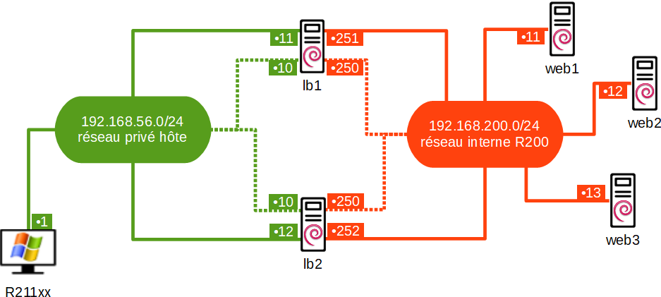

lb2
127.0.0.1 localhost
127.0.1.1 lb2
192.168.56.11 lb1
192.168.56.12 lb2
192.168.200.11 web1
192.168.200.12 web2
192.168.200.13 web3
# The following lines are desirable for IPv6 capable hosts
::1 localhost ip6-localhost ip6-loopback
ff02::1 ip6-allnodes
ff02::2 ip6-allrouters
#!/bin/sh
apt update
apt -y install ipvsadm
apt -y install heartbeat
# activation routage
sed -i 's/#net.ipv4.ip_forward=1/net.ipv4.ip_forward=1/' /etc/sysctl.conf
ipvsadm -A -t 192.168.56.10:80 -s rr
ipvsadm -a -t 192.168.56.10:80 -r 192.168.200.11:80 -m
ipvsadm -a -t 192.168.56.10:80 -r 192.168.200.12:80 -m
ipvsadm -a -t 192.168.56.10:80 -r 192.168.200.13:80 -m
# ipvsadm
# if you want to start ipvsadm on boot set this to true
AUTO="true"
# daemon method (none|master|backup)
DAEMON="master"
# use interface (eth0,eth1...)
IFACE="enp0s3"
bcast enp0s3
deadtime 5
keepalive 1
node lb1 lb2
#adresses virtuelles (et flottantes)
lb1 IPaddr::192.168.56.10 ipvsadm
lb1 IPaddr::192.168.200.254
auth 1
1 md5 motdepasse
#!/bin/sh
chmod 600 /etc/ha.d/authkeys
# localhost
auto lo
iface lo inet loopback
# réseau privé hôte > 192.168.56.0/24
allow-hotplug enp0s3
iface enp0s3 inet static
address 192.168.56.12/24
# réseau interne 'R200' > 192.168.200.0/24
allow-hotplug enp0s8
iface enp0s8 inet static
address 192.168.200.252/24
# ✋ valider la configuration "Réseau" sous VirtualBox, puis redémarrer…
#!/bin/sh
dpkg-reconfigure ipvsadm
systemctl restart ipvsadm.service
systemctl status ipvsadm.service